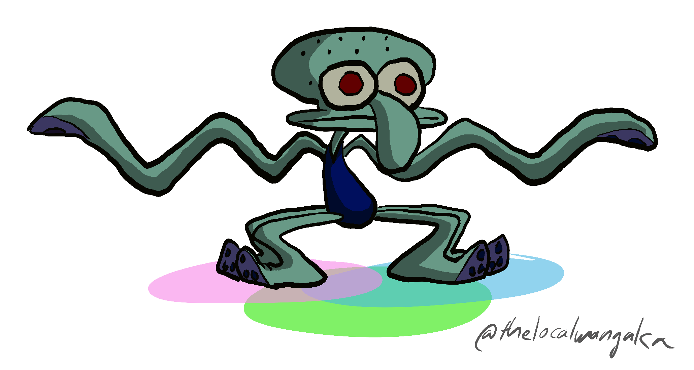

Coding Projects:
IGInsights: a JavaScript/HTML webpage that interacts with Facebook Developer API's to perform and present downloadable analytics on any public Instagram account. (Source) (September 2024)
Video Projects:
Squidward: Obsession and Futility: a 145-minute YouTube video essay analyzing every major episode appearance of Squidward from the "SpongeBob SquarePants" TV show, studying the fundamental relationship between cynicism and optimism against irrationality, and feeling like the world is outside of our control...and how all of this plays into creator Stephen Hillenburg's overall vision. (Script) (July 2024)
Genshin Impact Popularity Poll: Conducted an online poll on Reddit with over 11,000 responses, on which I performed comprehensive spreadsheet analytics. (Results) (March 2023)
Your Name: The Tenuity of Beauty: a 92-minute YouTube video essay analyzing the history, culture, and themes behind "Your Name" and the world of Makoto Shinkai, emphasizing the underlying importance of beauty, its fragility and strength, in all his movies. (Script) (February 2023)
Tatami Galaxy: Depression and Absurdity: a 54-minute YouTube video essay analyzing recurring motifs in the anime "Tatami Galaxy", examining the themes of loneliness and disillusionment in a bizarre universe that seemingly works against the main character. (Script) (April 2022)
Akira: The Art of Creation: a 66-minute YouTube video essay analyzing the history and philosophy behind the anime movie and manga "Akira", studying the persistence of human ability in face of adversity, such as the influences of World War II and the ensuing Cold War. (Script) (July 2021)
